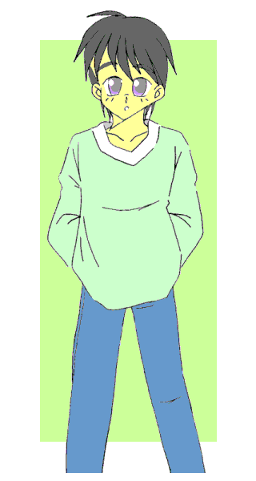
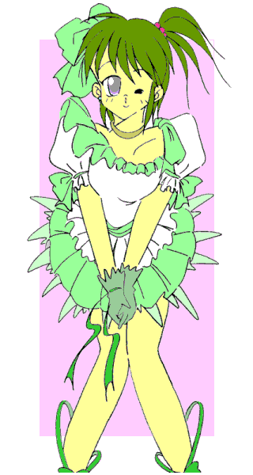
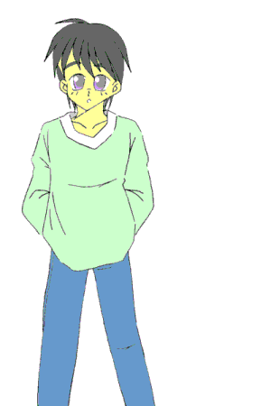

戻る
いくつものライトを浴びながら、みずきさんがステージの中央で歌い始める。
歌っているのはみずきさんのデビュー曲だ。
明るく元気なみずきさんの歌声がコンサート会場に響き渡ると、あちこちから｢みずきさーんっ！！｣と声がかけられ、会場は熱気に包まれた。
光を反射して衣裳のあちこちが、そしてそれ以上にみずきさん本人が光り輝く。
２ヶ月前に事故で人格が入れ替わる――というアクシデントにみまわれたにもかかわらず。……いや、だからこそ余計に、今のみずきさんはみんなの前で歌を歌える事に喜びを感じている。
そんなみずきさんをステージの横で見ながら、僕は思った。
どうしてこんなことになったのだろう？ 何で僕はここにいるのだろう？ …………と
僕はアイドル？
（完結編）
作：ライターマン

僕の本当の名前は立川光司（たちかわ・こうじ）。
都内の大学に通う大学生で、つい２ヶ月前までは芸能界とは全くかかわりのない生活を送っていた。
大学の後期試験中、トラブルで、ある科目の試験を受け損ねた僕は、試験後、やはり別の科目を受け損ねた大学の同期生にしてアイドルの鷹城みずき（たかしろ・みずき）さんと一緒に、担当の天本教授の研究室を訪れた。
そこで僕たちは、単位取得と引き換えに教授の研究の被験者となった。ところがスーパーコンピュータに接続された装置で脳波やいろんな情報を測定している最中に、雷が校舎に落ちたのだ。
僕たちは気を失い……そして目が覚めた時、僕とみずきさんは、お互いの身体が入れ替わっていた……。
元に戻すまでにはしばらくかかる……という教授の言葉に、みずきさんのマネージャの鳴瀬さんは、僕に「みずきさんの代わりをしろ」と言いだした。
僕としては、女の子――それもアイドルとして人前に出るなんて恥ずかしくて嫌だったけど、みずきさんの芸能人としての危機にファンである僕は放っておく事が出来ず、結局みずきさんの代役を引き受けた。
その間、僕はみずきさんの、女性の身体に困惑しながらもテレビ局やスタジオで女性らしく振舞い、ミニスカートで歌を歌ったり水着で写真撮影をしたり……と、何とか代役をこなしてきた。
そして紆余曲折はあったものの、入れ替わってから１ヶ月近く経とうとした頃、教授の努力により僕たちは元の身体に戻る事ができ、それぞれの生活に戻っていった。
…………だけど、これで全てが終わった訳じゃなかったのだ。
僕たちが戻ってから、３日後――
コンコン。｢教授、いますか？ 僕です、立川です｣
午前中に研究室を訪れて、扉を叩いて僕がこう言うと、しばらくしてから扉が開き、天本教授が姿を見せた。
｢なんじゃ立川君か？ ……どうしたんじゃ？｣
｢……とにかく、中に入れてもらえませんか？｣
そう言うと、教授は僕を中に招き入れた。
僕は少し迷った後、ゆっくりとジャンバーのファスナーを下ろして胸の部分を開いて見せた。
｢立川君……どうしたんだね？ その……膨らみは？｣
教授は呆然とした様子で僕の胸を凝視した。そこには……小さいながらも二つの膨らみ……乳房がはっきりとＴシャツの布地を押し上げていた！！
｢元に戻った後、急に膨らみだしたんです。最初は何かにかぶれて腫れてるのかと思ったんですけど……｣
さすがにここまで、しかも乳首まで大きくなったのではもう放っておく訳にはいかず、僕は周りの目を気にしながら大学を訪れたのだった。
｢声も前より高くなったような気がするぞ｣
｢やはりそうですか？ これでも低く抑えてるんですけど……｣
｢他に変化は？｣
｢腰が大きくなってウェストが細くなっている様な気がします。……教授、僕の身体どうなってるんです？ やっぱりこの前の実験の影響でしょうか？｣
｢ううむ……とにかく検査する必要がありそうじゃ｣
僕の胸を見てうなっていた教授は僕に再びジャンバーのファスナーを上げさせると、医学部の知り合いに連絡を取り始めた。
｢そんな……この目で見ても信じられないわ……｣
翌日、教授に呼び出された鳴瀬さんとみずきさんは、大きく目を見開いて僕の身体を見ていた。
あれから僕の身体はさらに変化していた。
腰の部分はさらに大きくなり、細くなったウェストが括れを作り出していた。
胸の膨らみも大きくなり、朝起きて鏡を見た僕は、｢ブラジャーが欲しいなあ｣と呟いてしまい、慌てて首を横に振って否定したのだった。
｢顔の輪郭も変わってきてるし……ねえ、この前カラオケでデュエットした曲を歌ってくれない？ 出だしだけでいいから｣
僕が歌いだすと、みずきさんと鳴瀬さんが唖然とした表情になった。
｢うっわー、きれいな声。なんか負けそう。……こうして見るとまるっきり女の子ね｣
みずきさんにそう言われて、僕は顔を赤くしてうつむく。
｢ところで鷹城君の方なのだが、体調に変化は無いのかね？｣
｢ええ、全然。身体に変化なんてないし、気分が悪いなんてこともありません｣
｢そうか……うーむ｣
そう言って教授は顎に手を当て、何やら考え始めた。
｢教授、今回の立川君の変化は、やはり元に戻った時の実験が原因ですか？｣
鳴瀬さんの質問に顔を上げた教授は、首を横に振った。
｢……いや、君達の話から推測すると、どうもそれ以前からわずかではあるが変化の兆候があったようじゃ｣
｢ということは、最初に入れ替わった時から？｣
｢うむ。……これはあくまでも想像じゃが、例の実験で人格だけではなく、身体形質のデータも共振を起こしたのではないか？ ……と思うのじゃ。そして落雷の衝撃で、鷹城君の持っていた肉体の情報が立川君の肉体に移されたのだと思う。ただ、人格のように完全に飛び出して入れ替わるのではなく、写真のように情報の一部……今回の場合は性別に関する部分……が、立川君の身体に写し込まれたんじゃないかな？｣
｢じゃあ、みずきちゃんの身体に影響が無いのは？｣
｢測定と計算の結果では、立川君が受けた衝撃は鷹城君の受けたものよりかなり小さい。肉体の情報が外に出るには小さすぎたんじゃろうな。とにかく最初の事故以来、立川君の身体では肉体情報の書き換えが密かに進んでいたようじゃ。そして元に戻るために同じ事を行なったために、その変化が爆発的に進行した。……とまあこういう事じゃな｣
｢じ……じゃあ僕の身体は？ どうなるんです？｣
僕は恐る恐る訊ねてみた。すると教授は少し悲しげな顔で、やはり首を横に振った。
｢残念じゃが、まず間違いなく女性化する……というか、もうほとんど『女性』じゃな。昨日検査した結果でも、骨格や血液中のホルモンを含めた成分の数値は成人女性のそれとほぼ同じじゃし、脳の構造にも変化が見られる。さらには体内に子宮、卵巣、膣などの器官が形成され発達中じゃ。そして決定的なのは性染色体じゃな。完全にＸＸ（ダブルエックス）に変化しておる｣
｢そ、それじゃあ……｣
｢恐らく数日以内に男性としての器官も萎縮、消滅し完全に女性になるじゃろう｣
その言葉に僕は大きなショックを受けた。男性としての器官の萎縮……それがすでに今朝から始まっていたからだ。
｢元に戻す事は……出来ないんですか？｣
｢もちろん調べてはみるが……可能性は低いじゃろうな。立川光司の、男性としての肉体の情報はすでに書き換えられていて、ほとんど失われておる。復元するのは不可能に近い｣
｢そんな……｣
僕は完全に打ちのめされていた。ようやく元の――男性の身体に戻ったと思ったのに、よりにもよってその身体が女性化するなんて……
｢僕……どうすれば……｣
呆然と呟く僕。その時、みずきさんが鳴瀬さんに何やら耳打ちする。
鳴瀬さんは頷いて立ち上がり、僕に近寄ってきた。
｢ねえ立川君、私達に一つアイデアがあるんだけど……｣
そう言って鳴瀬さんは僕の肩に手を置き、ニコッと微笑んだ。
１ヵ月後、コンサート会場――
最初の一曲を歌い終えたみずきさんは、ステージの中央に立ち、観客席に向かって挨拶をしてトークを始めた。
初めは来場してくれた事への感謝の言葉や、今までの思い出などを語っていたのだけれど、それらが一段落した頃……
｢さて皆さん。今日は重大な発表があります｣
と話し始めた。

ドクンッ！！
僕の心臓の鼓動が跳ね上がった。
……とうとうきた……とうとうきてしまった。
｢一つ目は、私に仲間ができたことです。私の素敵なパートナー、そして妹のような存在……その娘の名前は、『立川ひかる』っていいます。……ひかるちゃん、どーぞ｣
紹介された僕は、みずきさんのいるステージの中央へと駆け出した。
みずきさんのものとよく似たデザインのステージ衣裳――ただし、ショートヘアである僕の活発なイメージに合わせて、細部のデザインを変更しているそうだ。
僕はみずきさんの隣に立つと、マイクを持って会場に向かって挨拶をした。
｢あ、あのっ、は……初めまして。ぼ……あ、あたし立川ひかるといいます。今度みずきさんと一緒に歌う事になりましたので、よろしくお願いしますっ｣
そう言ってペコンとお辞儀をすると、会場中がどよめいた。
｢二つ目は、今後、私たちは『スパークリング』というユニット名で活動する事になりました。……みんな、私とひかるちゃん、そして『スパークリング』をどうぞよろしくねっ｣
みずきさんがそう言うと、会場から｢うおーっ｣とか、｢みずきさーん｣、｢ひかるちゃーん｣などの叫び声が聞こえた。
｢そして、三つ目は新曲の紹介です。ひかるちゃんの――そして『スパークリング』にとってのデビュー曲……聞いて下さいっ！！｣
そして音楽が流れ、僕たちは歌い始めた。
もう後戻りはできない……
それは僕の……アイドル「立川ひかる」のデビューの瞬間だった。
あの時――
身体が女性化して途方にくれていた僕に、鳴瀬さんが出したアイデア。
それは、みずきさんと僕とでアイドルデュオを結成しよう！ というものだった。
｢どうしてそうなるんです！？｣
訳が判らずに僕は叫んだ。
｢アイドルデュオっていうことは、つまり……僕に『女の子』として芸能界デビューしろって事ですかっ！？｣
｢当然よ。だってあなたは女の子でしょ？｣
｢冗談じゃない！！ 僕は男です！！｣
半泣きで叫ぶ僕の胸を、鳴瀬さんがチョンチョンと突いた。｢……こんな立派な胸なのに？｣
｢ひゃあっ！？ ……なっ、なっ、何をするんですっ！？ 触らないで下さいっ！！｣
僕は思わず飛び上がり、鳴瀬さんから逃げ出すと、研究室の隅で胸を隠すようにしてうずくまった。
すると今度はみずきさんが近付いてきて、優しく微笑みながら囁いた。
｢ねえ立川君、あなたは気づいてないかもしれないけど、女の子になったあなたってすごく可愛くなってるのよ。それに声もきれいだし、歌もあたしの代わりができるくらい上手いんだから、それを生かさないともったいないわ｣
｢そんな……僕は男です。可愛いと言われても嬉しくありません｣
｢でも、もうすぐ女の子になるんでしょ？｣
｢うっ……そ、それは｣
｢この前カラオケで歌った時、お互い息ぴったりだったし……あたし達、絶対いいコンビになれるわ。男に戻れる可能性も低いんだし、女の子として生きる事をちょっとは考えた方がいいんじゃない？｣
｢ぼ……僕は可能性が少しでもあれば、男に戻りたいんです！！｣
｢あたしがこんなに頼んでも？｣
｢ううっ……みずきさん。そんな顔されても……｣
目を潤ませながら頼んでくるみずきさんに、しどろもどろになりながらも僕は反論した。
しかし……
｢その可能性だって教授の研究次第でしょう？ その費用はどうやって出すの？｣
鳴瀬さんが突然こう言い出した。
｢……費用って？｣
｢あなたの身体を男に戻す研究は、教授本来の研究テーマじゃないでしょう？ それをさせるためには、費用を一切あなたが持つべきじゃない？｣
｢そんな、僕がこうなった原因はそもそも教授の……｣
｢それにあなた達を元に戻すために修理したコンピュータの修理費も、まだ払ってもらってないわ｣
｢え？ だってあれは成瀬さんたちの方で……｣
｢あの時私は、『修理費はこちらで負担します』と言ったのよ。この場合の『こちら』とは、当事者であるみずきちゃんと立川君――つまり立川君には修理費の半額を支払う義務があるのよ｣
｢そ、それって……いくらなんです？｣
僕は恐る恐る聞いてみた。
｢うむ、このスーパーコンピュータは特別製じゃからの…………｣
教授の口から出た数字に、僕は文字どおりひっくり返った！！
｢どう？ あなたに半額払える？｣
｢む……無理です｣
｢じゃあ、費用はうちのプロダクションで立て替えてあげるから、あなたはアイドルになって働いて、その借金を返す事。……いいわね？｣
｢…………はい｣
鳴瀬さんに睨まれてしぶしぶ頷いた僕に、みずきさんが抱きついてきた。
｢きゃあ、やったあ！！ これから一緒に頑張りましょうねっ♪｣
大喜びのみずきさんの声を聞きながら、僕は涙が止まらなかった。
それからの一ヶ月間は、瞬く間に過ぎていった。
教授の予言どおり、僕の身体は翌日にはトイレで立ったまま用を足すことができなくなっていた。
そしてさらに次の日、僕の身体から男としての部分が消滅していた。
僕は元々小柄で、みずきさんとほぼ同じ身長だったけど、みずきさんの肉体の情報を反映しているせいか、スタイルや顔立ちもみずきさんに近いものへと変化していった。
鳴瀬さんは僕をデビューさせるために、新曲をデュエット用に編曲しなおしたり、コンサートの演出の変更、さらに人数が増えた分の衣裳その他の手配や交渉を精力的にこなしていった。
そして僕とみずきさんは、コンサート用の衣裳の採寸と試着、演出その他スタッフとの打ち合わせを行い、レッスン、そして毎日の体力作り。
それらの合間に、僕は「立川ひかる」と名乗る事が決まり、みずきさんのマンションへ引越し（幸か不幸か部屋が一つ空いていた）、下着や普段着の購入（嫌がる僕をみずきさんが無理やり引っ張っていった）を行なった。
……そして、コンサート当日。
僕はアイドルデュオ『スパークリング』の一人、立川ひかるとしてのデビューを果たし（……たかった訳じゃないのだが）、コンサートは熱狂の渦に包まれたまま幕を閉じた。
｢……ふうーっ、終わったあ｣
コンサートが終了して控え室に戻った僕は、ホッと安堵の息をついた。
｢お疲れ様。すごかったわ、今までで最高の盛り上がりじゃないかしら？ やっぱりひかるちゃんってアイドルになる運命だったのよ｣
少し興奮気味に喋る鳴瀬さんからジュースを受け取りながら、僕は顔を引きつらせ、｢アハハ……｣と笑うしかなかった。
｢じゃあこれ。……ご褒美という訳じゃないけど、あなたのプロフィールをこちらで用意したわ｣
そう言って鳴瀬さんは、僕に一枚の紙を渡した。
｢僕のプロフィール？ ええっと……あれ？ 生年月日とか出身地とかは僕自身のものと同じですよ……って何ですか、この部分はっ！？ 『２００×年２月、身体の不調を訴え検査した病院で女性である事が判明、性別再判定手術を受ける』って！？｣
｢だって戸籍を完全に偽装したら、学校にも通えないし、ご両親にも会えないでしょう？ だからこの方が都合がいいのよ。幸いな事に教授の知り合いの、納谷病院の院長先生が診断書や手術記録を作ってくれたわ｣
｢勝手にそんな事を！！ うちの親が知ったらなんて言うか……｣
｢ご両親は承諾してくれたわよ｣
｢……えっ！？｣
｢お二人とも、『なってしまったものは仕方がない』っておっしゃってたわよ。特にお母様なんて、『私、娘が欲しかったのよね』とか言って、あなたが帰ってくるのを楽しみにしてるわ｣
｢あああああ、なんてお気楽な……｣
僕は思わず頭を抱えた。みずきさんはそんな僕にそっと近づくと、優しく身体を抱きしめてくれた。
｢ひかるちゃん、悲しむ事はないわ。女の子のひかるちゃんにはあたしというパートナーもいるし、今回のコンサートでファンも大勢出来た。ご両親も喜んでくれているわ。だから信じましょう……あたし達がアイドルとして成功する事を、そしていつか素敵な男性とめぐり合って、女性としての幸せをつかむことを……｣
｢……僕が男性に戻って、みずきさんと結婚して幸せをつかむ――という可能性は？｣
｢ないわ｣
｢ううううっ、そんなあっさり否定しないで……｣
僕はみずきさんの腕の中で、悲しみの涙で頬を濡らした。
翌日――
｢おはようひかるちゃん。……どうしたの？ 顔色が悪いわよ｣
コンサート開けの休養日という事で、いつもより遅く起きてきたみずきさんは、僕の顔を見て心配そうに声をかけた。
一緒に住むようになってから、みずきさんは色々と僕の世話を焼くようになった。
仲のよい芸能人や友人に僕を紹介したり、女性としての身だしなみの手ほどきをしてくれたり、ブティックやショップに僕を連れていって服や下着を見立てたり……
気分はすっかり｢可愛い妹が出来てはしゃいでいるお姉さん｣である。
ちなみに僕の、｢普段は男らしくすごしたい｣や、｢そんなヒラヒラした（または丈が短い）スカートなんか嫌だ｣とか、｢ジーンズやスラックスが欲しい｣という意見は……全て却下されている。
｢うん、今朝からちょっとおなかの具合が……｣
｢痛むの？ どのあたりが？｣
｢このへん……かなあ？｣
みずきさんの質問に答えて僕が痛む部分に手をあてると、みずきさんの表情が一転して明るくなった。
｢ねえ、それってもしかして生理じゃない？｣
｢え？ せいり？ ……ってもしかしてあの生理のこと！？｣
｢そうよ、たぶん間違いないわ！！ おめでとうひかるちゃん。これであなたも立派な大人の女性の仲間入りができたのよ！！｣
｢そんな……僕が……生理？｣
嬌声を上げて抱きついてきたみずきさんの腕の中で、僕は呆然として呟いた。
つい２ヶ月前まで男だった僕に、生理が来るなんて……
｢でも大変！ 生理が始まるなら急いでナプキンをあてないと。……ひかるちゃん、あなた自分のもの持ってる？｣
みずきさんの質問に、僕はフルフルと首を横に振った。
｢……もう、しょうがないわね〜。あたしのを使わせてあげるから、次からは自分で用意するのよ｣
そう言ってみずきさんは、自分の部屋へ駆け出していった。
｢ああ……だんだん男への道が遠く険しくなっていく……｣
｢いまさら何を言ってるの！！ いいから早くこっちに来なさい！！｣
みずきさんは嘆いている僕を、風呂場の方へと引っ張っていった。
……そして一時間後、みずきさんの言うとおり、僕に生理が訪れた。
｢今日の夕食はお赤飯にしましょうね♪｣
｢お願いだからそれだけはやめてえぇぇぇ――っ！！（涙）｣
そして――
｢……あっ来た来た。おーいっ｣
新学期が始まり、大学を訪れた僕は、同じクラスの学生数人に呼び止められた。
今日の僕の服装は、ロゴ入りの帽子に胸の膨らみが目立たないデザインのＴシャツ、そしてジャンバーにスラックス。
以前、みずきさんの身体で外出する時に使用した、レポーターよけの服装を参考に用意したものだ。
胸の膨らみを完全に隠す事はできないけど、これなら何とかごまかせるかも――と、思ってたんだけど……
｢よう立川、話は聞いたよ。……お前、本当は女の子だったんだってな｣
｢ええっ！！ ど、ど、どうしてそれを？｣
｢ほら、ここに書いてあるよ｣
驚く僕に、別の一人が雑誌を指差しながら言った。
そこには、｢突如現われた美少女アイドル立川ひかる。その意外な経歴！！｣と書かれていて、コンサートで歌う僕の写真が添えられていた。
｢記事の方は男の時の名前書いてなかったけど、写真をよく見てみるとお前になんとなく似てるじゃん。……それに実際今のお前、女の子になってるし――｣
｢女の子に見える？ この服装で？｣
｢当たり前だよ。顔は可愛くなってるし、胸はちゃんと出てるし、誰も今のお前を見て、『男』だと思う奴なんかいないって｣
きっぱりと断言されて、僕はがっくりと項垂れた。
｢……それにしても本当に可愛くなったな。今度二人で一緒に食事をしない？｣
｢あ、ずるいぞ。……立川、こんな奴の誘いに乗らないで僕と一緒に映画を見に行こうよ｣
｢いや僕と……｣
突然男たちが僕を誘い始めたので、僕は慌てて言った。
｢おい、気は確かか？ お前らも知ってるように、僕はつい最近まで男――｣
｢｢｢可愛ければ許すっ！！｣｣｣
僕の目の前にいた全員が一斉に口をそろえてそう言ったので、僕は絶句してしまった。
そして周囲にいた人たちが、この騒動で僕に気がついた。
｢あ、アイドルの立川ひかるちゃんだ｣
｢本当だわ。きゃー、可愛い。……本当に以前は男の子だったの？ 信じられない｣
｢ねえ、突然女の子になってショックじゃなかった？｣
｢握手してください！ ファンなんです！！｣
｢サインを！｣
そう言って全員が近づいてきたので、僕は思わずその場を逃げ出した。
｢もう嫌――っ！！
教授ーっ、お願いですから僕を元に戻してくださいーっ！！｣
満開の桜並木を全力疾走しながら叫んだ僕の願いは…………結局叶えられる事はなかったのだった。
｢……へ・ん・し・ん♪｣

（おわり）
おことわり
この物語はフィクションです。劇中に出てくる人物、団体および病名は全て架空の物で実在の物とは何の関係もありません。
あとがき
どうも、ライターマンです。
かつてこのようなエンディングを迎えた入れ替わりものがあっただろうか？ というか強引過ぎ（笑）。
とうとう代役ではなく本物のアイドルの座を手にした光司君……もといひかるちゃん。
しかも周りは、ひかるちゃんが元男という事を気にせず受け入れてくれる優しい人たちばかり（笑）。
彼女の未来は明るいと言えるでしょう。……本人の希望ではない、というところに若干の問題はありますが（爆）。
それではまた。
□ □